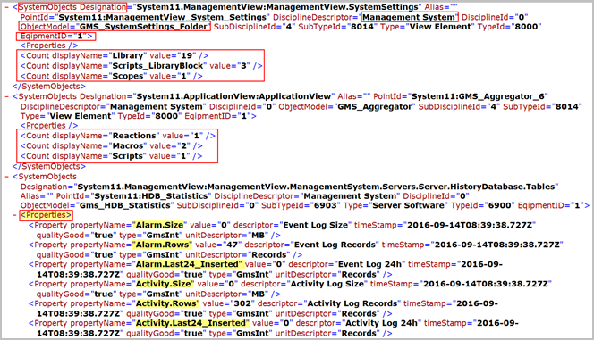

IBase Report
The IBase report is an XML file located on the Desigo CC server station under
[Installation Drive:]\[Installation Folder]\[Project Name]\shared\scripting\IBaseReport.
You cannot change this path.
- The naming convention of the IBase report is as follows:
SiteInfo_[CSID]_[System Name].xml.
For example, SiteInfo_9999_System2.xml, where
- CSID is the Customer Site ID obtained from LMU
- System Name is the name of the system (project) for which you are working with. - If you have to shut down the Desigo CC station during IBase execution, the report generation continues.
- The IBase report classifies the information based on the equipment ID, which in turn, is associated with a discipline.
If you have a management station with more than one discipline, you can configure multiple equipment IDs, one for each discipline. In this case, the generated IBase report will contain information for more than one discipline. - If no extension module other than the IBase and Scripts is included in the project, the generated IBase report displays information about the system objects only. This includes broadly:
- System Objects’s Object Models (for example, GMS_ServerPrinter, GMS_Library_Object, GMS_SystemSettings_Folder and so on)
- Properties of the system objects’s and their values and so on (for example, it includes properties Alarm.Size, Alarm.Rows, Activity.Size and so on for the system object with OM name as GMS_HDB_Statistics)
- Count of occurrences for an object, if the display name is same of the object model for example, for OM = GMS_Graphics, having the DisplayName = Graphics, an entry is displays depending upon the number of Graphics in the system as follows:
<Count displayName="Graphics" value="2" />You can use this to find out how many graphics, or printers or libraries and so on are configured in the project at the customer’s installed base. - Parent OM (for example, it displays the parent OM GMS_Library_Object for the OM GMS_Scripts_LibraryBlock)
- Designation (for example, ManagementView, ApplicationView and so on)
- When extension modules providing the IBaseConfigurationScript.json files are configured in the project, a single comprehensive IBase report containing data from all participating extension modules is provided. This report first provides information about the extension module objects and about the system objects.
- We recommend verifying the IBase report with the IBaseConfigurationScript.json file, which is provided with the extension modules configured in the project.
- The IBase report reflects the information related to objects coming from library customizations at any level. So, for example, an extension module contains a customized object model and if the IBase configuration file provided by this extension module includes this customized object model, the IBase report generated also displays the information about the customized object model, including the information of its devices, drivers, networks and points.
